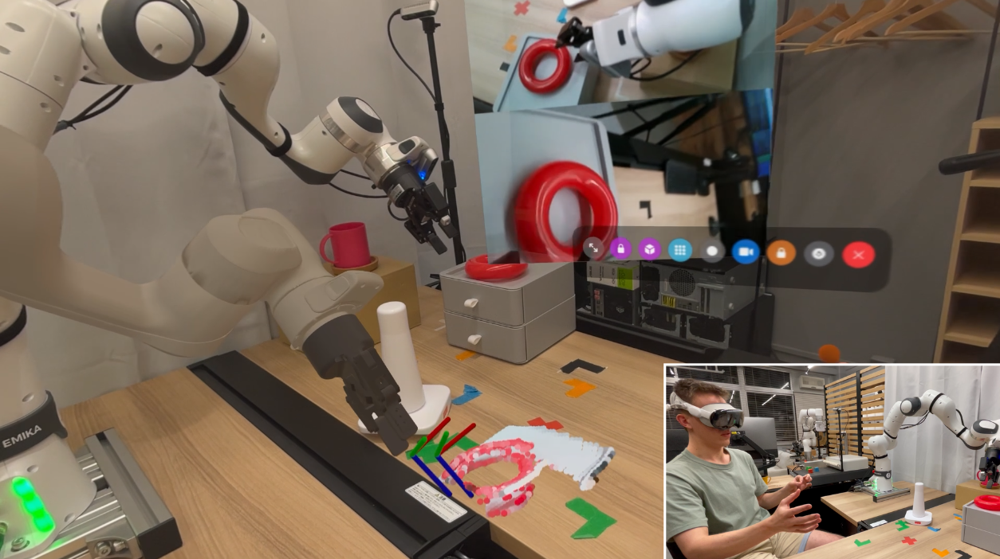
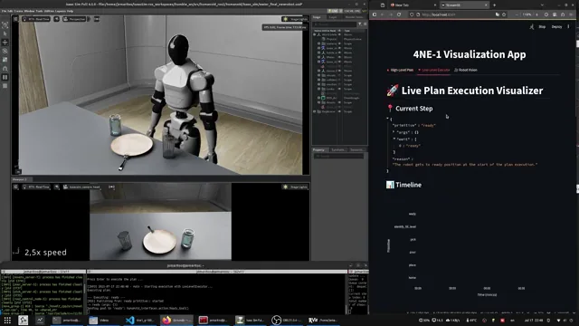
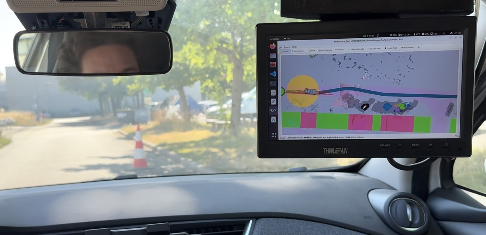
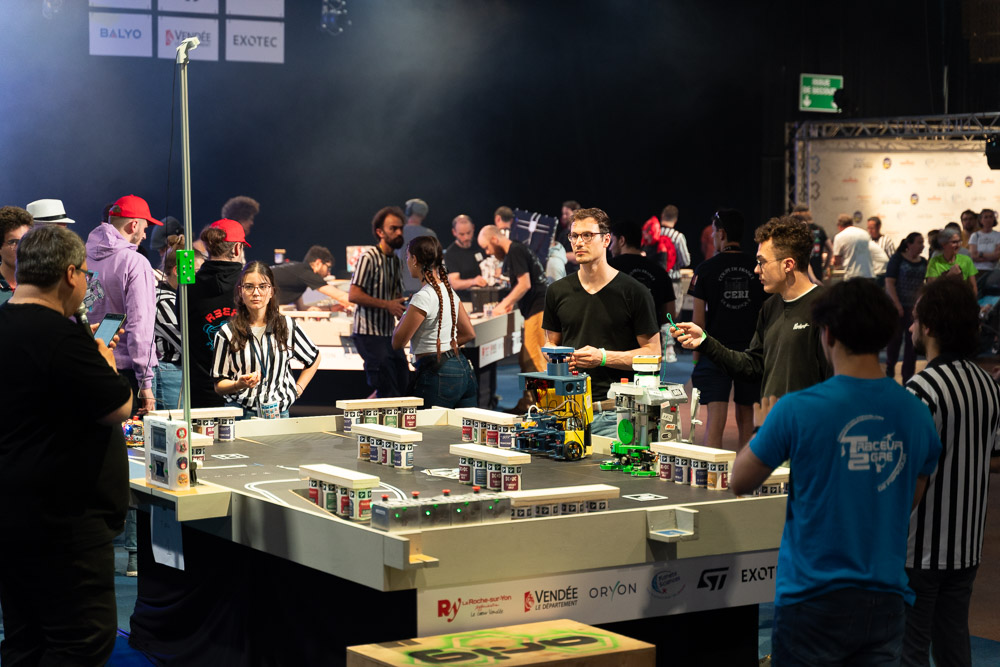

01
Master thesis - pHRC
Human-Robot Collaborative Object Manipulation Using Deep Active Inference
Real-time deep active inference using an ACT policy model and a world model with a Franka Research 3 cobot.

Robotics - AI - Human-Robot Interaction
Robotics Projects
Robotics graduate specializing in learning-based robotics, with a strong foundation in mechanical engineering. Experienced in developing and deploying AI-driven robotic systems on real-world platforms with imitation learning, reinforcement learning, and ROS 2. International experience across Germany, France, and Japan through research, industry, and competitive robotics projects.
Project links
Master thesis - pHRC
Real-time deep active inference using an ACT policy model and a world model with a Franka Research 3 cobot.
Teleoperation - mixed reality
Apple Vision Pro teleoperation pipeline for cobots with hand tracking, ROS 2 control, and camera, point-cloud, and virtual robot feedback.

Reinforcement learning - quadruped
Hierarchical RL policy for object pushing with a Unitree Go2 robot, including complete sim-to-real transfer.
Humanoids - task planning
Enables execution of long-horizon tasks from natural-language commands through generated and validated multi-step action plans. Simulated with a 4NE1 humanoid in Isaac Sim using a realistic environment and ROS 2 control.

Autonomous driving - ROS 2
ROS 2 LiDAR cone detection and path planning for a real autonomous car challenge. Our team won first place in the competition.

Eurobot - ROS 2
Software stack for the Eurobot France 2025 competition. ROS 2-based mobile robot capable of handling cans and planks.
